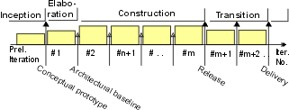
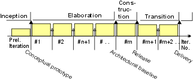
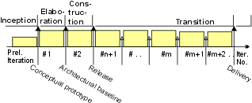
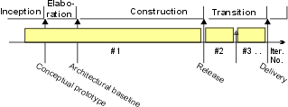

| RUP Lifecycle |
|
| Contents |
|---|
|
The phases and milestones of a project From a management perspective, the software lifecycle of the Rational Unified Process (RUP) is decomposed over time into four sequential phases, each concluded by a major milestone; each phase is essentially a span of time between two major milestones. At each phase-end an assessment is performed to determine whether the objectives of the phase have been met. A satisfactory assessment allows the project to move to the next phase. Planning PhasesAll phases are not identical in terms of schedule and effort. Although this varies considerably depending on the project, a typical initial development cycle for a medium-sized project should anticipate the following distribution between effort and schedule:
which can be depicted graphically as
This distribution can vary. For example, tools that generate code and test cases can shorten the construction phase. Also, for an evolution cycle, the inception and elaboration phases would be considerably smaller, since a basic vision and architecture are already established. Planning StrategiesIn this section, we introduce a number of lifecycle patterns corresponding to common project profiles. Lifecycle pattern: Incremental"The incremental strategy determines user needs, and defines the system requirements, and then performs the rest of the development in a sequence of builds. The first build incorporates parts of the planned capabilities, the next build adds more capabilities, and so on until the system is complete." [DOD94] The following iterations are characteristic:
 This strategy is appropriate when:
Lifecycle pattern: Evolutionary"The evolutionary strategy differs from the incremental in acknowledging that user needs are not fully understood, and all requirements cannot be defined up front, they are refined in each successive build." [DOD94] The following iterations are characteristic:
 This strategy is appropriate when:
Lifecycle pattern: Incremental DeliverySome authors have also phased deliveries of incremental functionality to the customer [GIL88]. This may be required where there are tight time-to-market pressures, where delivery of certain key features early can yield significant business benefits. In terms of the phase-iteration approach, the transition phase begins early on and has the most iterations. This strategy requires a very stable architecture, which is hard to achieve in an initial development cycle, for an "unprecedented" system. The following iterations are characteristic:
 This strategy is appropriate when:
Lifecycle pattern: "Grand Design"The traditional waterfall approach can be seen as a degenerated case in which there is only one iteration in the construction phase. It is called "grand design" in [DOD94]. In practice, it is hard to avoid additional iterations in the transition phase. The following iterations are characteristic:
 This strategy is appropriate when:
Lifecycle pattern: Hybrid StrategiesIn practice few projects strictly follow one strategy. You often end up with a hybrid, some evolution at the beginning, some incremental building, and multiple deliveries. Among the advantages of the phase-iteration model is that it lets you accommodate a hybrid approach, simply by increasing the length and number of iterations in particular phases:
|


© Copyright IBM Corp. 1987, 2006. All Rights Reserved. |